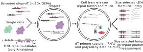

The goal of scrunchy is to facilitate the analysis of experiments that measure the heterogeneity of enzymatic activities among single cells.
We have developed functional assays as a new modality for single-cell experiments. These assays measure the conversion of substrates to products by single-cell extracts in a high-throghput DNA sequencing experiment. The assays are performed in the context of traditional single-cell mRNA sequencing experiment, enabling type identifcation and functional assessment of single cells. Our initial efforts have focused on measuring DNA repair activities in single cells and we are developing methods for other enzymes including proteases and kinases. Together these assays provide a new type of information from single-cell experiments.
The method to measure DNA repair enzymes takes advantage of the fact that nearly all DNA repair initiates with strand incision. By including synthetic polyadenylated DNA hairpins containing defined lesions, we can measure the number of incisions by cellular DNA repair factors in a high-throughput DNA sequencing experiment. Because we are measuring strand incision on DNA hairpins, we call the assay Haircut—and scrunchy keeps track of your Haircut experiments. The following figure provides an overview of the method.

Overview
scrunchy facilitates the analysis and visualization of combined functional and transcriptome data from single cells.
- Processing
- Statistical analysis
- Visualization
The Functional Single Cell Experiment (fsce)
fsce is an object of class FunctionalSingleCellExperiment, which can contain data from multiple modalities and does not require that each modality has the same number of cells or features. It is a thin wrapper around [MultiAssayExperiment::MultiAssayExperiment].
A FunctionalSingleCellExperiment contains one or more objects of class [SingleCellExperiment], which contain observations and derived measurements that are linked by barcodes attached during sample work-up.
scrunchy contains a subset of cells from an experiment to measure gene expression and DNA repair activities in human peripheral blood mononuclear cells.
## A FunctionalSingleCellExperiment object of 2 listed
## experiments with user-defined names and respective classes.
## Containing an ExperimentList class object of length 2:
## [1] rnaseq: SingleCellExperiment with 9462 rows and 250 columns
## [2] haircut: SingleCellExperiment with 426 rows and 250 columns
## Features:
## experiments() - obtain the ExperimentList instance
## colData() - the primary/phenotype DataFrame
## sampleMap() - the sample availability DataFrame
## `$`, `[`, `[[` - extract colData columns, subset, or experiment
## *Format() - convert into a long or wide DataFrame
## assays() - convert ExperimentList to a SimpleList of matricesIndividual experiments
## class: SingleCellExperiment
## dim: 9462 250
## metadata(1): PCA
## assays(2): counts logcounts
## rownames(9462): NOC2L HES4 ... AC004556.1 AC240274.1
## rowData names(0):
## colnames(250): TGCGGGTGTAGAGTGC TGGTTCCCATCTATGG ...
## CTCGAAAAGTTCGATC TGACAACGTCGCATAT
## colData names(4): cell_id k_cluster leiden_cluster cell_cycle
## reducedDimNames(3): PCA UMAP TSNE
## spikeNames(0):
## altExpNames(0):## 5 x 5 sparse Matrix of class "dgTMatrix"
## TGCGGGTGTAGAGTGC TGGTTCCCATCTATGG CATATTCCACGTCAGC
## NOC2L . . .
## HES4 . . .
## ISG15 . . 1
## TNFRSF4 . . .
## SDF4 . . .
## TCACAAGTCCTGCTTG GGAATAATCCAGGGCT
## NOC2L . .
## HES4 . .
## ISG15 . .
## TNFRSF4 . .
## SDF4 . .## class: SingleCellExperiment
## dim: 426 250
## metadata(0):
## assays(2): counts logcounts
## rownames(426): Abasic_1 Abasic_10 ... riboG_8 riboG_9
## rowData names(2): hairpin position
## colnames(250): TGCGGGTGTAGAGTGC TGGTTCCCATCTATGG ...
## CTCGAAAAGTTCGATC TGACAACGTCGCATAT
## colData names(1): cell_id
## reducedDimNames(0):
## spikeNames(0):
## altExpNames(0):## 5 x 5 sparse Matrix of class "dgTMatrix"
## TGCGGGTGTAGAGTGC TGGTTCCCATCTATGG CATATTCCACGTCAGC
## Abasic_1 13 21 14
## Abasic_10 . . .
## Abasic_11 1 . .
## Abasic_12 . . .
## Abasic_13 . . .
## TCACAAGTCCTGCTTG GGAATAATCCAGGGCT
## Abasic_1 7 14
## Abasic_10 . .
## Abasic_11 . .
## Abasic_12 . .
## Abasic_13 . .## DataFrame with 426 rows and 2 columns
## hairpin position
## <character> <character>
## Abasic_1 Abasic 1
## Abasic_10 Abasic 10
## Abasic_11 Abasic 11
## Abasic_12 Abasic 12
## Abasic_13 Abasic 13
## ... ... ...
## riboG_60 riboG 60
## riboG_61 riboG 61
## riboG_7 riboG 7
## riboG_8 riboG 8
## riboG_9 riboG 9# column annotations contain info about each row in the matrix,
# or about each unique cell present in any of the experiments
colData(fsce_small)## DataFrame with 250 rows and 1 column
## cell_id
## <character>
## TGCGGGTGTAGAGTGC TGCGGGTGTAGAGTGC
## TGGTTCCCATCTATGG TGGTTCCCATCTATGG
## CATATTCCACGTCAGC CATATTCCACGTCAGC
## TCACAAGTCCTGCTTG TCACAAGTCCTGCTTG
## GGAATAATCCAGGGCT GGAATAATCCAGGGCT
## ... ...
## CTACGTCCACCACGTG CTACGTCCACCACGTG
## TGTGGTAAGGTGCTTT TGTGGTAAGGTGCTTT
## AGCGTCGGTCGAGTTT AGCGTCGGTCGAGTTT
## CTCGAAAAGTTCGATC CTCGAAAAGTTCGATC
## TGACAACGTCGCATAT TGACAACGTCGCATAT
Normalization
Normalized data is calculated by the create_ functions.
RNA data is log-normalized and scaled to total UMI count for each cell. Functional data is normalized using the center log ratio method used for CITE-seq analysis.
Normalized data is stored in the logcounts slot of each SingleCellExperiment object.
## TGCGGGTGTAGAGTGC TGGTTCCCATCTATGG CATATTCCACGTCAGC
## Abasic_1 1.9849896 2.351059 2.053252
## Abasic_10 0.0000000 0.000000 0.000000
## Abasic_11 0.3940656 0.000000 0.000000
## Abasic_12 0.0000000 0.000000 0.000000
## Abasic_13 0.0000000 0.000000 0.000000Feature selection and PCA
# get variable genes
var_genes <- calc_var_features(fsce_small, n = 1000)
# calc PCA and embed in 2D
fsce <- calc_pca(fsce_small, n_pcs = 20, genes = var_genes)## scaling data## calculating pcsEmbed cells in 2D using UMAP or tSNE
Cell embeddings are stored in the reducedDims slot of the SingleCellExperiment and can be accessed as a named list.
## List of length 3
## names(3): PCA UMAP TSNE## [,1] [,2]
## TGCGGGTGTAGAGTGC 1.908842 0.8429150
## TGGTTCCCATCTATGG -4.010063 0.7808292
## CATATTCCACGTCAGC 2.501747 -0.7414021
## TCACAAGTCCTGCTTG 0.891331 -8.8625031Tidying data for analysis and plotting
Several tidy_ functions are provided to convert fsce into a tidy format.
##
## Attaching package: 'dplyr'## The following object is masked from 'package:matrixStats':
##
## count## The following object is masked from 'package:Biobase':
##
## combine## The following objects are masked from 'package:GenomicRanges':
##
## intersect, setdiff, union## The following object is masked from 'package:GenomeInfoDb':
##
## intersect## The following objects are masked from 'package:IRanges':
##
## collapse, desc, intersect, setdiff, slice, union## The following objects are masked from 'package:S4Vectors':
##
## first, intersect, rename, setdiff, setequal, union## The following objects are masked from 'package:BiocGenerics':
##
## combine, intersect, setdiff, union## The following objects are masked from 'package:stats':
##
## filter, lag## The following objects are masked from 'package:base':
##
## intersect, setdiff, setequal, union##
## Attaching package: 'purrr'## The following object is masked from 'package:DelayedArray':
##
## simplify## The following object is masked from 'package:GenomicRanges':
##
## reduce## The following object is masked from 'package:IRanges':
##
## reducefsce_tidy <- purrr::reduce(
list(
tidy_dims(fsce_small) %>%
select(cell_id, starts_with("UMAP"), -experiment),
tidy_coldata(fsce_small),
tidy_logcounts(fsce_small[c("Uracil_45", "riboG_44"), , ]) %>%
select(-experiment)
),
left_join,
by = "cell_id"
)## harmonizing input:
## removing 250 sampleMap rows not in names(experiments)## # A tibble: 250 x 8
## cell_id UMAP1 UMAP2 k_cluster leiden_cluster cell_cycle Uracil_45
## <chr> <dbl> <dbl> <chr> <chr> <chr> <dbl>
## 1 TGCGGG… 1.91 0.843 2 2 S 1.36
## 2 TGGTTC… -4.01 0.781 6 4 S 2.16
## 3 CATATT… 2.50 -0.741 2 2 G2M 1.85
## 4 TCACAA… 0.891 -8.86 5 3 G1 0.477
## 5 GGAATA… -2.52 3.65 4 4 G1 1.30
## 6 CTTGGC… 0.606 -8.65 5 3 G2M 1.80
## 7 GTGAAG… -3.53 2.93 6 1 S 0.895
## 8 AGCGGT… -1.70 1.16 6 1 G1 1.80
## 9 GGATGT… 7.48 5.61 3 6 S 0
## 10 GTACTC… -2.30 1.47 6 1 G1 1.39
## # … with 240 more rows, and 1 more variable: riboG_44 <dbl>Visualization
Two-dimensional embeddings
Features can be visulized on a two-dimensional embedding with the plot_dims() function which will plot gene/function assay values.
cowplot::plot_grid(
plot_dims(fsce_tidy, UMAP1, UMAP2, Uracil_45, size = 1),
plot_dims(fsce_tidy, UMAP1, UMAP2, riboG_44, size = 1)
)
Functional activities
Activities can be visualized per-group with plot_actvitiy(). These two plots have uracil and ribonucleotide excision activities plotted per cluster (k-means, n = 6).
cowplot::plot_grid(
plot_activity(fsce_tidy, Uracil_45, k_cluster),
plot_activity(fsce_tidy, riboG_44, k_cluster)
)
Heatmap
These heatmaps show uracil and ribonucleotide excision activities for the U:A and riboG hairpins
mtx <- logcounts(fsce_small[["haircut"]])
rows <- paste("Uracil", 1:61, sep = "_")
plot_heatmap(mtx, rows, name = "Uracil")